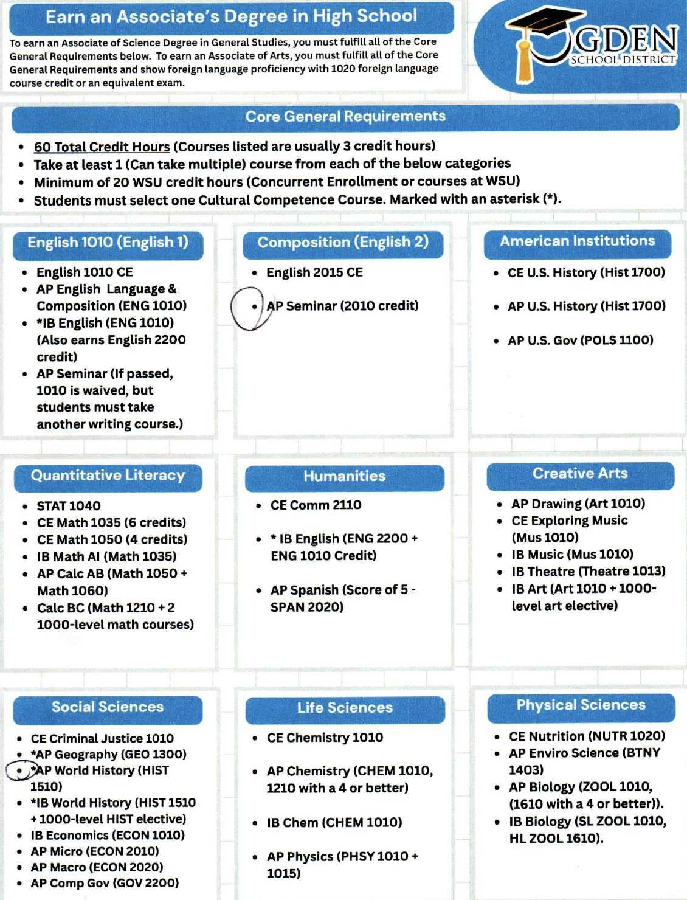
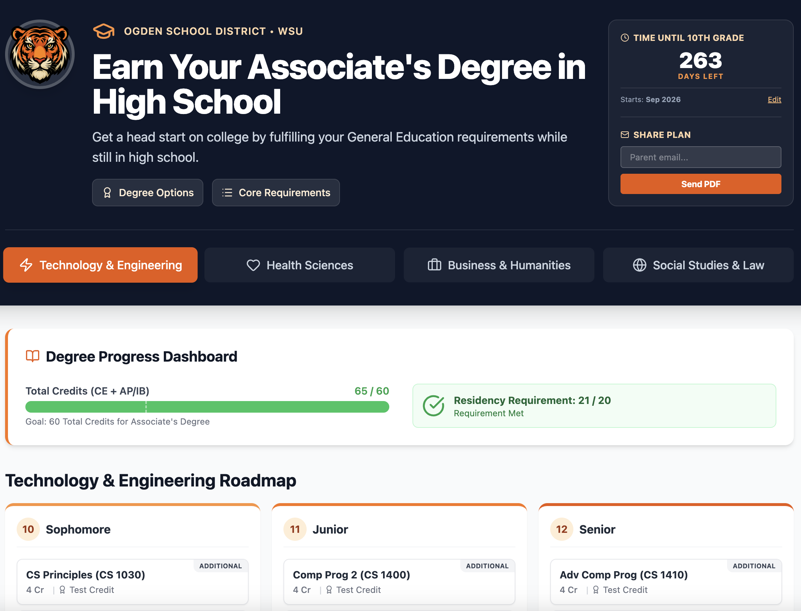
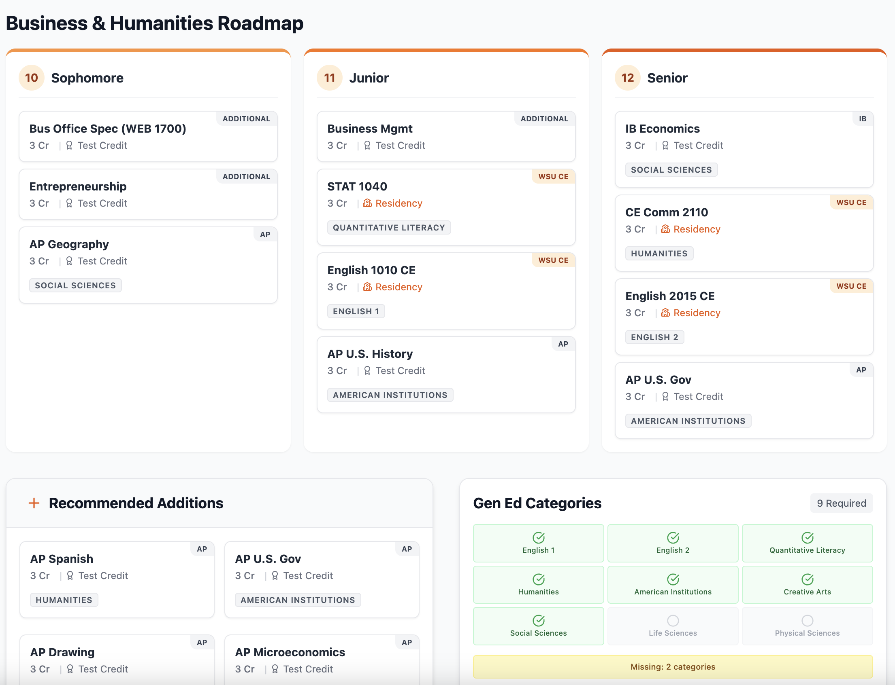

Bridging Your Data With Strategy
Make the complex obvious
Golden Data ships the AI feature that makes the next step in your app obvious — designed against your real users, evaluated against real failure modes, handed off as production code in your codebase. Two to three weeks.
What Golden Data does
Spec the right feature
I work with you to find the one AI feature that actually changes how your app feels — not the three that sound impressive on a roadmap. Decision-first scoping, with strong taste for sales ops, ad tech, analytics, and BI products.
Build it in your stack
Code that ships in your codebase. Latency budgets, eval harness, cost caps, observability — the boring parts that make AI work in production.
Ship something users notice
No chatbot in the corner. The feature shows up at the moment of decision, makes the next step obvious, and gets out of the way.
The core offer
The Clarity Sprint
A focused engagement that ships one production-ready AI feature in your codebase — spec'd, built, evaluated, and handed off in two to three weeks.
You bring
- Codebase access and a working dev environment
- The user moment you want to make obvious
- The constraint you've been wrestling with (latency, cost, accuracy, scale)
You get
- Production code in your repo, not on a slide
- An eval harness with golden examples + latency and cost monitoring
- A handoff doc explaining what was shipped and why
Proof
Case Study: Ogden School District
Different domain, same lens. Before AI features, this thinking was applied to institutional documents. The frame transfers cleanly: find the moment of decision, surface the constraint, make the next step obvious.
The Problem: Degree requirements were locked in a dense, static PDF.
Parents had to manually track credits and interpret complex eligibility rules on their own.
The Fix: We transformed the policy into a living, visual roadmap.
Confusion was replaced by a clear status bar and obvious next steps.

"Wall of text" cognitive load.
Hidden constraints.


Visual progress. Clear hierarchy.
Actionable next steps.
Why this worked
- Progress is visible, not inferred
- Constraints surface early, not after mistakes
- Everyone is looking at the same source of truth
About
Who's behind Golden Data
I'm Paul Brown — I ship AI features inside B2B SaaS apps. I currently lead sales operations at a social media ad tech platform, with a background in analytics engineering, senior data analyst leadership, and BI strategy. The features I build for clients are the ones I see my own teams actually need.
What I believe
The goal isn’t “more data.” The goal is shared understanding. If people can’t explain it in 60 seconds, it’s broken — and we can fix it.